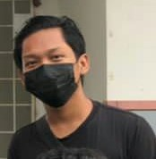
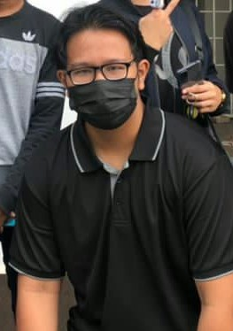
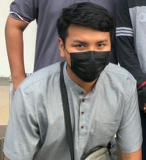
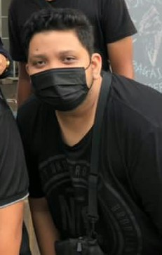
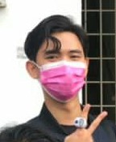
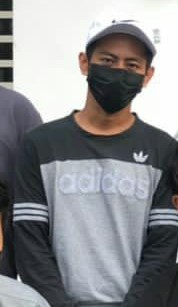

|  | This is Daniel Hakim. I can him Hakim (don't call him Daniel). He live in Jitra, Kedah. He loves to sing 90s music...and cats. Yeah, he LOVES cats. His favourite drink is ice milk tea. He likes to joke around and making weird noises sometimes. One time, he makes bird noises out of nowhere. Also, he's a bit insecure especially about his hair. But he is very dedicated to learn. Keep it up bro. |
| This is Humaidi. I just call him Maidi. He's from Sungkai, Perak He is the Gamer. Genshin Impact is his favourite game. Almost everyday play the game on his laptop actually. He...can be a heavy sleeper sometimes. Yeah, it can be quite challenging to wake him up at times. But he wake up...eventually. However, he never miss classes...he sometimes late but hey. Keep pushing bro. |  |
|  | This guy right here is Azief Najmin. Yes...Najmin not Najmi. Najmin is from Tanjung Malim, Perak. This guy LOVE to fish. It is his favourite pass time activity. Usually when there's no classo or no work to do he will go fishing at any stream, quary, lake, swap that he could find. Some day he's lucky..,some day he's not. However, one thing about him that differs from the rest is...he can cook. One time, he prepared us chicken rice. Thank you bro. |
| This here is Naem. Yes just Naem. Also Naem with an "e" not "i". He's from Teluk Intan, Perak. Yeah that play with the leaning tower. He likes to pick on his friend. Don't worry about it he's harmless. He's just messing around. But, he is the driver. To class, to mall, to anwhere with his car. He also a grabcar driver. Pretty hardworking if you ask me. Keep going bro. |  |
|  | This is Aqil Farhan. People call him Paan but but I call him Aqil. He live in Merbok, Kedah. Yeah. His house is just minutes away from the campus. Pretty lucky if you ask me. This guy has a lot to unpacked. There is nothing he love more than badminton. And he's good at it. Like REALLY good. His favourite food is burger. He took burger seriuosly. And one othe thing, this is quite major. He very take great care of his physical appearance. His face, his hair, his skintone, his odor and more. He is that kind of a guy. Looking Good bro. |
| This is Mohamad. I just call him Mat. He's from Langkawi, Kedah. He is the member of the Bachelor of Library Science Club (BLiBS). He also very hardworking because he also work at a foodstall in campus almost everyday. But, he sometimes he can be quite forgetful. So yeah good for him. |  |